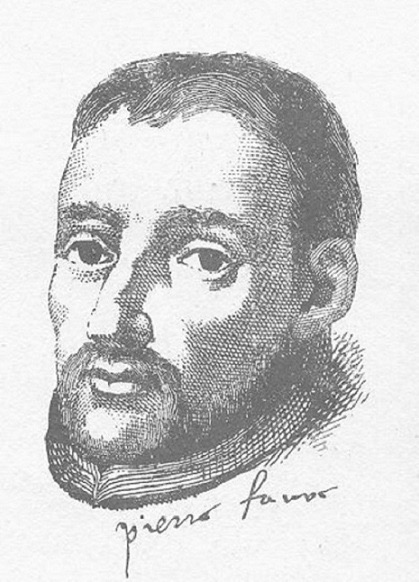
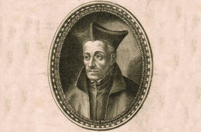

Utemeljitelji i rano razdoblje reda
Svećenik
Sv. Petar Faber
1506. – 1546.
Prvi svećenik među Ignacijevim drugovima povezivao je nastanak Družbe s blagim duhovnim razgovorom. Putujući Europom u vrijeme reformacije, pratio je ljude kroz Duhovne vježbe i gradio odnose povjerenja.

Izvor slike


Izvor slike
- Spomendan
- 2. kolovoza
- Zaštitništvo
- Nije navedeno u izvoru
- Životni vijek
- 1506. – 1546.
- Djelovanje
- Duhovno vodstvo i razlučivanje · Dijalog i pomirenje
- Razdoblje
- 16. stoljeće
- Datum rođenja
- 13.04.1506.
- Mjesto rođenja
- Savoja, današnja Francuska
- Datum smrti
- 01.08.1546.
- Mjesto smrti/mučeništva
- Rim, Italija
- Okolnosti smrti/mučeništva
- Umro od bolesti nakon dugih apostolskih putovanja.
- Uloga
- Svećenik
- Mučenik
- Ne
- Ostale oznake
- Suosnivač Družbe Isusove; prvi svećenik među prvim drugovima; duhovni pratitelj
- Pripadnost
- Isusovac
- Drugi oblici imena
- Peter Faber · Peter · Pierre Favre
Životopis
Sveti Petar Faber bio je jedan od prvih drugova svetoga Ignacija Loyole i prvi svećenik među njima. Njegova je služba povezivala nastanak Družbe Isusove s osobnim duhovnim razgovorom i vođenjem ljudi kroz Duhovne vježbe. Velik dio kratkoga života proveo je na putovima između europskih gradova, služeći u vremenu reformacije i dubokih crkvenih podjela. Uz učenost su ga obilježili blagost u ophođenju, sposobnost prijateljstva i molitva koja je pratila njegovo apostolsko djelovanje.
Rodio se 13. travnja 1506. u Villaretu, u Savoji, u seljačkoj obitelji. Djetinjstvo je proveo u alpskom kraju, gdje je čuvao stoku i započeo školovanje. Učio je kod svećenika u Thônesu, a zatim u La Roche-sur-Foronu. Ljubav prema učenju odvela ga je 1525. u Pariz. Ondje je u kolegiju svete Barbare studirao filozofiju i dijelio smještaj s Franjom Ksaverskim. Njihovu će se studentskom krugu poslije pridružiti stariji Ignacije Loyola, a prijateljstvo te trojice postat će važnim dijelom povijesti isusovačkoga reda.
Petar je pomagao Ignaciju u studiju filozofije, dok je od njega primao duhovno vodstvo. Taj je odnos uključivao razgovore o savjesti, dvojbama i duhovnim teškoćama. Ignacije mu je pomagao sazrijevati u vjeri i razabrati svoj životni put. Godine 1530. završio je studij filozofije, a nekoliko godina poslije obavio je Duhovne vježbe pod Ignacijevim vodstvom. Iskustvo koje je sam primio postat će jednim od glavnih oblika njegove buduće svećeničke službe.
Za svećenika je zaređen 1534. godine. Na svetkovinu Uznesenja Blažene Djevice Marije, 15. kolovoza iste godine, predvodio je misu u kapeli na Montmartreu. Ondje je prvih sedam drugova položilo zavjete siromaštva i čistoće te prihvatilo nakanu hodočašća u Jeruzalem. Faber je bio jedini svećenik među njima. Taj je događaj prethodio formalnom osnutku Družbe Isusove, ali je učvrstio zajednički smjer skupine koja će je oblikovati. Povezivali su ih studij, molitva i spremnost da vlastiti život stave u službu Evanđelja.
Kada je Ignacije 1535. napustio Pariz, Faber je među drugovima nastavio djelovati kao stariji brat. Pomagao je čuvati zajedništvo i uvodio nove članove u Duhovne vježbe. Krajem 1536. skupina je krenula prema Veneciji, gdje se ponovno susrela s Ignacijem. Ratne su prilike onemogućile planirano putovanje u Svetu Zemlju. Drugovi su potom otišli u Rim i stavili se na raspolaganje papi Pavlu III. Družba Isusova dobila je papinsko odobrenje 1540.; Faber je sudjelovao u njezinim početcima, a njegovo se poslanje ubrzo proširilo daleko izvan Rima.
Nakon rada u Italiji, među ostalim u Parmi i Piacenzi, poslan je u njemačke krajeve. Sudjelovao je u okolnostima vjerskih razgovora u Wormsu i Regensburgu, no njegova je osobita služba bila obnova ljudi i zajednica kroz osobni susret. Davao je duhovne vježbe, razgovarao sa svećenicima, pohodio samostane i poticao ozbiljniji kršćanski život. U sredini u kojoj su se razlike lako pretvarale u neprijateljstvo, njegovi životopisi ističu miran i blag način postupanja. Vjernost katoličkoj vjeri povezivao je s potrebom obnove među samim katolicima.
Djelovao je u Speyeru, Mainzu i Kölnu te boravio u Leuvenu. Među ljudima na koje je snažno utjecao bio je Petar Kanizije, koji je pristupio Družbi Isusovoj i poslije postao važan nositelj katoličke obnove. Faberova se služba nije ograničavala na jedan društveni sloj. Duhovno je pratio biskupe, svećenike, plemiće i druge vjernike. U tim je susretima znanje dobivalo osoban oblik: razgovorom i molitvom nastojao je pomoći čovjeku u razlučivanju i obnovi vlastitoga života.
Duhovne vježbe bile su u središtu toga rada. Faber ih nije prenosio samo kao naučeni sadržaj, nego kao službu u kojoj se drugomu pomaže da pred Bogom razmotri svoj život. Rana isusovačka predaja posebno ističe njegovu sposobnost takva vodstva. Prijateljstvo i razgovor omogućivali su mu da se približi ljudima, a pouka i molitva usmjeravale su susret prema vjeri. Taj se oblik apostolata odvijao u nizu pojedinačnih susreta, uz putovanja i promjene mjesta u koja je bio poslan.
U Portugalu i Španjolskoj djelovao je osobito tijekom posljednjih godina života. Boravio je u Lisabonu i brojnim španjolskim gradovima, propovijedao i podupirao rast mlade Družbe. Među osobama povezanima s njegovom duhovnom službom bio je Franjo Borgija. Takvi su odnosi pomagali povezati prve isusovce s novim ljudima i sredinama. Faberova putovanja zato pripadaju i povijesti širenja reda, ali i vrlo osobnoj povijesti duhovne pratnje koju je pružao susretnutim ljudima.
O njegovu nutarnjem životu svjedoči duhovni dnevnik Memoriale, koji je počeo voditi 1542. U njemu se osvrt na život povezuje sa zahvaljivanjem Bogu i razmatranjem primljenih dobročinstava. Njegova pisma i upute bavili su se i praktičnim pitanjima duhovne pratnje, među ostalim ispovijedanjem, bratskom ljubavlju, osobnom obnovom i životom na putovanju. Posebno je štovao Euharistiju, anđele i svece. U novim se mjestima preporučivao zagovoru njihovih zaštitnika, a za osobe koje je susretao molio je pomoć njihovih anđela čuvara. Takva je pobožnost pratila njegov rad među ljudima različitih zemalja i jezika.
Papa Franjo u homiliji 3. siječnja 2014. u crkvi Il Gesù posebno je povezao Faberov nutarnji život s apostolskim putovanjem i blagošću u naviještanju Evanđelja. U tom se crkvenom tumačenju njegova otvorenost prema ljudima ne odvaja od želje za Bogom. Duhovno razlučivanje i spremnost na poslanje pripadali su istom pozivu. Faber se tako pamti kao čovjek koji je znao voditi ozbiljne razgovore o vjeri, a pritom očuvati srdačnost prema sugovorniku. Ta je crta ostala važnim dijelom njegova isusovačkog nasljeđa.
Godine 1546. pozvan je da kao teolog sudjeluje na Tridentskom saboru. Na putu iz Španjolske stigao je u Rim, ali do Sabora nije došao. Umro je 1. kolovoza 1546., u dobi od četrdeset godina. Njegova je svećenička služba trajala tek nešto više od desetljeća, ali je obuhvatila početke Družbe i rad u više europskih zemalja. Prijateljstva koja je gradio i ljudi koje je uvodio u duhovni život nastavili su donositi plod nakon njegove smrti.
Papa Pio IX. potvrdio je njegovo javno štovanje kao blaženika 5. rujna 1872. Papa Franjo proglasio ga je svetim 17. prosinca 2013. Isusovci Faberov blagdan slave 2. kolovoza, dan nakon njegova smrtnog dana. U Crkvi ostaje živ spomen prvoga svećenika među Ignacijevim drugovima, putnika koji je molitvom, duhovnim vježbama i osobnim prijateljstvom pomagao ljudima približiti se Kristu.
Život i nasljeđe
Faberovo djelovanje u njemačkim zemljama odvijalo se uz pokušaje da se vjerski sukobi riješe službenim razgovorima. Bio je prisutan u Wormsu i Regensburgu, ali nije sve svoje nade polagao u uspjeh javnih rasprava. Uočavao je slabu pouku vjernika, zapuštenost pastoralne skrbi i nedostatnu pripravu dijela svećenstva. Zbog toga je velik dio snage posvećivao osobnim razgovorima i duhovnim vježbama za one koji su već nosili crkvenu odgovornost. Njegov je pristup polazio od toga da obnova treba zahvatiti i život navjestitelja, a ne samo njihove argumente.
Tijekom boravaka u Speyeru, Mainzu i Kölnu okupljao je svećenike, studente i druge tražitelje duhovne pomoći. Kratki boravci nisu značili površne odnose: nastojao je da se započeta promjena nastavi nakon njegova odlaska. Susret s Petrom Kanizijem osobito je važan primjer takva učinka. Čovjek kojemu je Faber pomogao razlučiti zvanje poslije je desetljećima djelovao na području na kojemu je njegov učitelj mogao ostati tek ograničeno vrijeme.
Njegova putovanja nisu slijedila jedan neprekinut zemljopisni smjer. Pozivi iz Rima vraćali su ga iz Njemačke u Španjolsku, zatim ponovno na sjever te u Portugal. Na dvorovima u Lisabonu i Valladolidu nastupao je prije svega kao svećenik i duhovni pratitelj. Povijesni izvori povezuju njegovo djelovanje i s učvršćivanjem zvanja Franje Borgije. Povezivao je tako ljude vrlo različitih životnih položaja, od mladih sveučilištaraca do uglednika koji su tek razmišljali o promjeni svojega životnog puta.
Poziv da kao papinski teolog sudjeluje na Tridentskome saboru stigao je kada su neprestana putovanja već iscrpila njegovo zdravlje. U Rim se vratio u srpnju 1546., a ubrzo je umro, prije nego što je mogao preuzeti novu zadaću. Njegov doprinos saboru zato se ne smije opisivati kao sudjelovanje u njegovim kasnijim raspravama. Ostaje važan po ljudima koje je oblikovao i po duhovnoj obnovi koja je prethodila provedbi saborskih odluka.
Pročitaj više na izvornoj stranici ↗